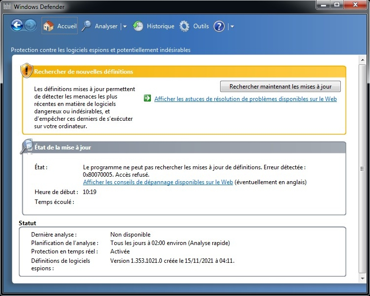

Cette erreur se produit parce que vous n'avez pas les droits d'administrateur accordés pour mettre à jour les définitions de virus. Réessayez d'exécuter Windows Defender en tant qu'administrateur (notamment si vous êtes sous Windows Vista ou Windows 7).
Résoudre l'erreur : 0x80070005
(0x80070005) : Le programme ne peut pas rechercher les mises à jour de définitions : Accès refusé.
Version 1.0 (créé le 10/07/2022, modifié le 10/07/2022)
Fonctionne sur : Windows Vista ou supérieur
